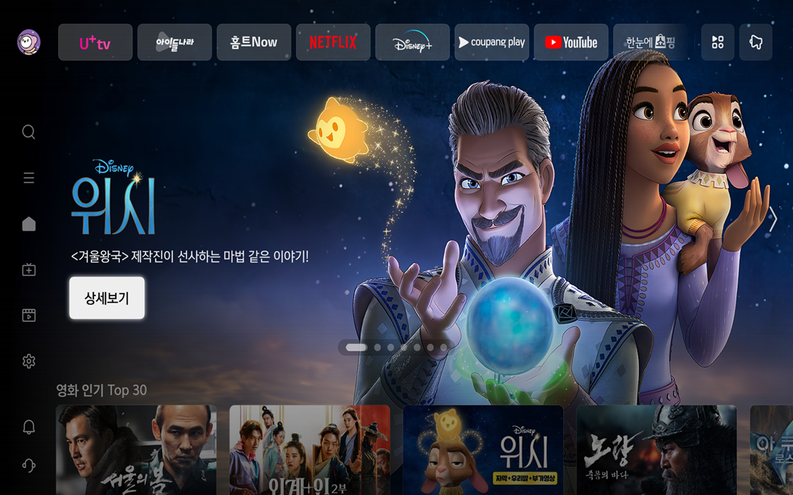
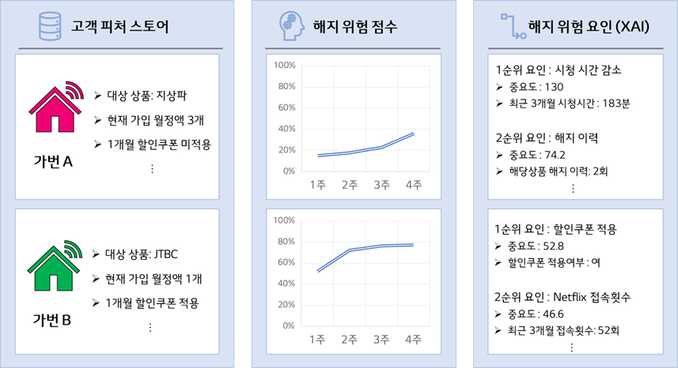
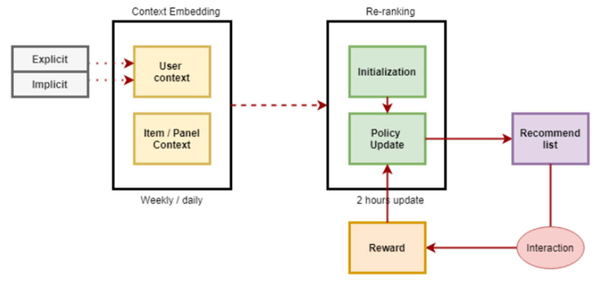
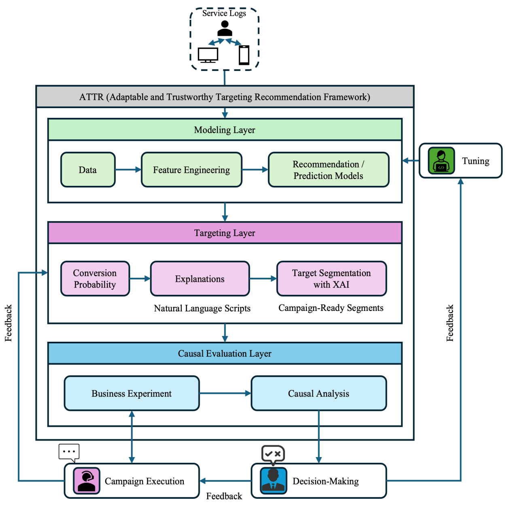
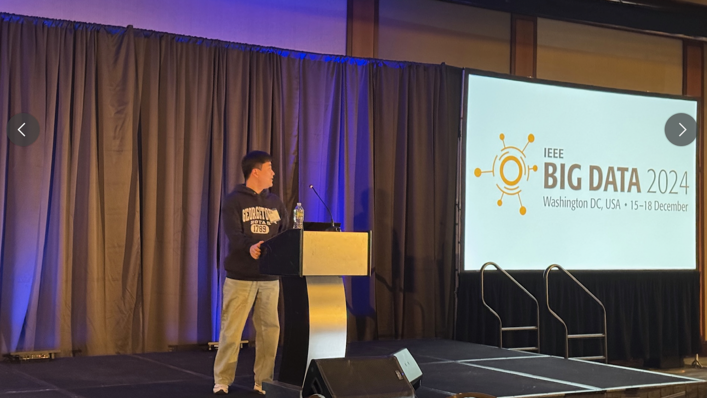

핵심 방향
다양한 연구 성과와 상용 배포 경험을 바탕으로, 복잡한 실데이터 속에서 서비스 가능한 해법을 찾고 실사용 환경에서 재현 가능한 성능을 만들어냅니다.
DATA SCIENTIST · TECHNICAL PM
AI 에이전트 초개인화, 추천 시스템, 인과 추론을 실제 서비스에 연결해 증명 가능한 비즈니스 임팩트를 만드는 데이터 사이언티스트입니다.
About
다양한 연구 성과와 상용 배포 경험을 바탕으로, 복잡한 실데이터 속에서 서비스 가능한 해법을 찾고 실사용 환경에서 재현 가능한 성능을 만들어냅니다.
LLM 기반 개인화, 추천·타겟팅 시스템, 인과 추론 기반 의사결정 최적화에 집중하고 있습니다. 모델 성능뿐 아니라 조직이 신뢰하고 실행할 수 있는 형태의 결과를 지향합니다.
Projects

LG유플러스 · 2024.11 ~ 진행 중

LG유플러스 · 2024.05 ~ 2024.12

LG유플러스 · 2024.04 ~ 2024.08

LG유플러스 · 2023.11 ~ 2024.04

LG유플러스 PoC · 2023.08 ~ 2023.12

Research to Production · 2025
Figures
ICLR 2026 Figure 1
ICLR 2026 Figure 2
 ICLR 2026 Figure 3
CIKM 2025 Figure 1
CIKM 2025 Figure 2
ICLR 2026 Figure 3
CIKM 2025 Figure 1
CIKM 2025 Figure 2

IEEE 2024 Figure 1 IEEE 2024 Figure 2 IPTV Churn Model Contextual MAB
Subscription Recommendation 0
 Subscription Recommendation 1
Subscription Recommendation 2
Subscription Recommendation 3
SEG Banner Optimization
Subscription Recommendation 1
Subscription Recommendation 2
Subscription Recommendation 3
SEG Banner Optimization
Experience
Technical PM 역할을 병행하며 Personal Agent 개인화 및 추천/타겟팅 시스템을 고도화했습니다.
NHIS 100만 명 규모 코호트 기반 분석과 시계열 군집화·인과 추론 연구를 수행했습니다.
기업 신용보증 심사 및 정량·정성 데이터 기반 리스크 예측/건전성 관리 업무를 수행했습니다.
국가별 연구 경쟁력 비교 분석 및 논문 실적 데이터 리포트를 작성했습니다.
Publications
ICLR 2026 Workshop: Agentic AI in the Wild · 2026-03-07
CIKM 2025 Workshop: Human-Centric AI · 2025-11-14
Journal of Health Informatics and Statistics · 2025-02-28
IEEE BigData 2024 · 2024-12-15
European Journal of Endocrinology · 2024-03-27
Eye · 2023-04-11
Contact